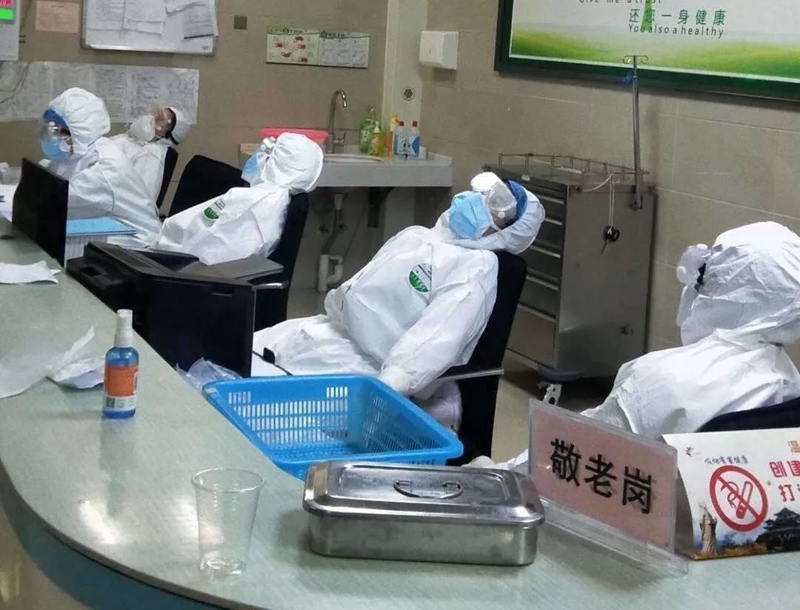
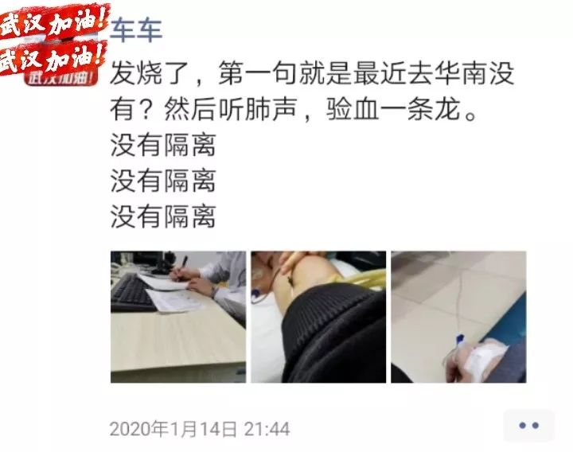
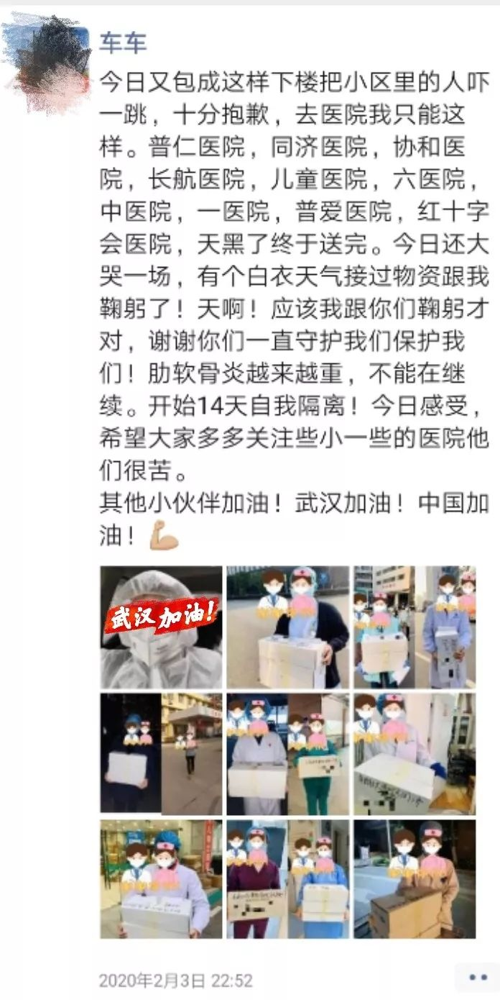
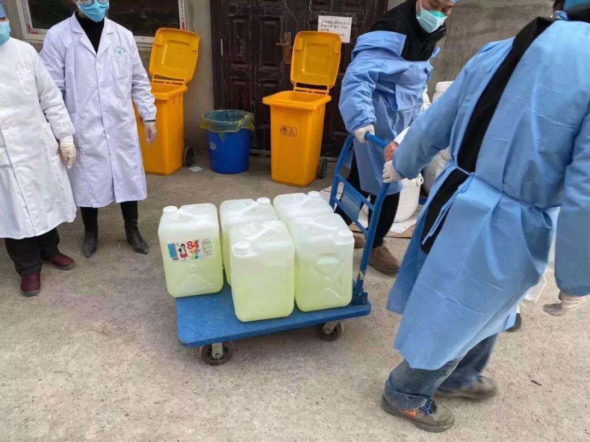
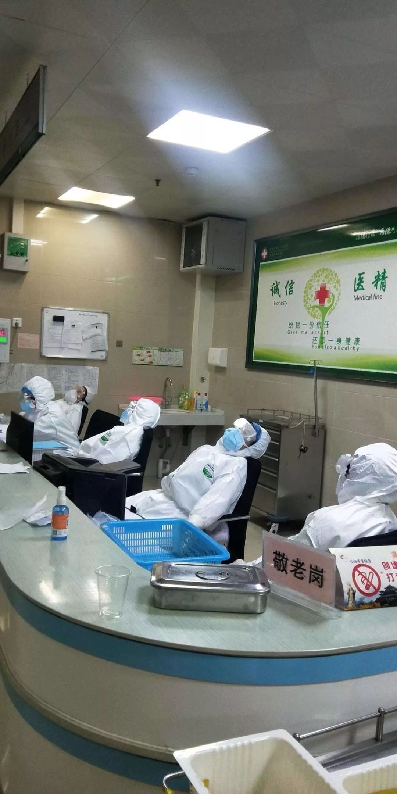
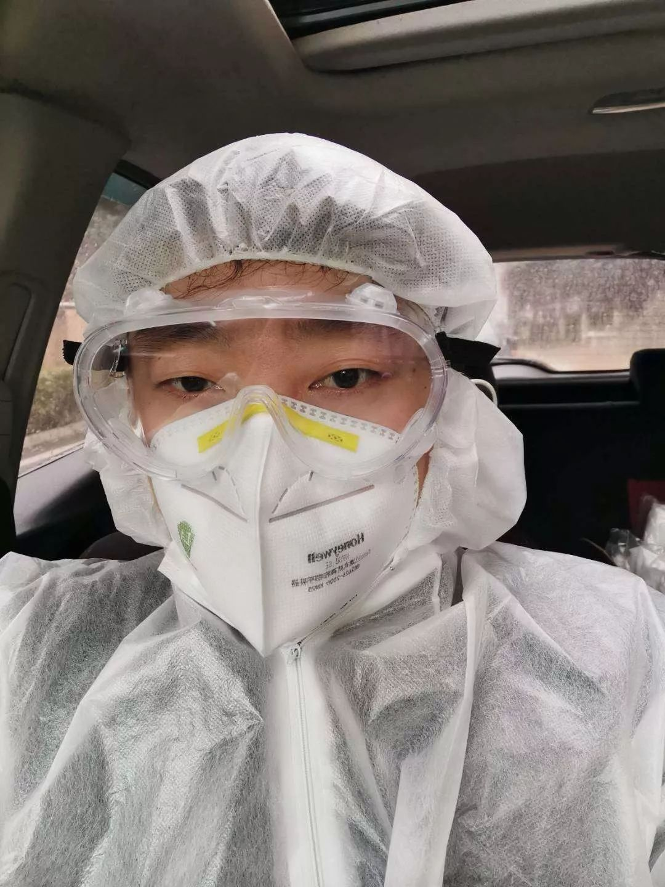

武汉协和医生：我从没穿过这么贵的防护服
原文链接 备份链接 大家好，我是田静。 2003年「非典」期间，柴静采访战斗在一线的医护人员：「你们靠什么防护？」 当时医生的回答是：「我们靠精神防护。」 17年后，又一轮疫情，医疗资源依然紧缺。 我们的武汉姑娘宸宸，这些天都坚持在前线做 …

1月23日，武汉市公共交通停运。一些本地的私家车主决定为医务人员护航，免费接送他们上下班，并运送救援物资到各大医院。34岁的车车便是其中一员。
文 | 吴美芬
从1月底开始，车车几乎跑遍了武汉每一个医院，为医护人员送上民众捐赠的物资。
2月6日，我联系上车车时，他说如果是匿名，可以接受采访。他认为自己做的事情不值得一提，也不想让家里人知道他正在做这件事，怕他们会担心。
以下是车车的自述：
来自医生的提醒
我是湖南人，在武汉创业，在这个城市生活了十几年，对它有非常深厚的感情。
1月中旬，家里几个人都发烧了，14日我去社区医院看医生，15日带小孩去协和医院儿科看。不管去哪家医院，医生一听说是发烧，都问最近去过华南海鲜市场没？
车车的朋友圈
当时医院看发烧的人已经很多，听肺声和验血排队很长。医生是我的朋友，给我透露说平时要做好防护、戴口罩之类的。他没有很明确地说是一件什么事，但确实提醒过我。
我没怎么看新闻，很多消息都是医生朋友告诉我的。大概1月23日左右，我就在考虑要不要带全家回到湖南老家去，但后来又决定全家留下来。武汉已经是我的家了，不管我走到哪里，这里总让我惦记着，所以我们就没回老家。
我和我的小伙伴们，在武汉做了很多年公益。
去年武汉暴雨洪涝时，马路被淹掉，很多车过不去，我们车队自发组织去救援，为一些小学送吃的，还去白沙洲的大学城，把困在里面的大学生一波一波地运出来。我们很愿意为这个城市去做一些事情。
1月底，有几个朋友跟我讲医院的物资非常紧缺，我们就想着出点力，筹集点资金购买口罩、防护服等医疗物资捐给医院。我们负责运送物资到医院，武汉这么多家医院，包括协和、红十字会、省人民、中南医院等，几乎每一个都走过了。
2日3日，我送物资到红十字会医院。此时，医院门口已经被围栏围起来，进不去。我只好给接收物资的医生打电话，电话通了没人接，我想他可能在抢救病人，没敢继续打。
后来，在门口看到有个医生走过，就喊住他。他当时也是比较急，回应的语气特别急。我跟他说明来意，把物资给了他。他跟我说，绝对不会弄丢，一定会交到我联系的那个医生手里。
我跟他说，这些物资就是给你们白衣天使的，不管最后到了谁手里，不重要，只要发挥了该有的作用，我就觉得很好。
那时很多大医院都在发物资紧缺的求助公告，社会都看得到他们的信息，都在关注他们。
但还是有一些小医院根本没有人关注。
“我情绪崩溃了，蹲在路边哭了好久”
2月4日，我去了一个很小的医院，叫做普仁医院，这家医院也有很多人在看病。我给联系的医生打了电话后在门口等。
等了10分钟，医生下来了，我看到他身上并没有穿医生该穿的防护服，脸上没有口罩。我没有去问他原因，但是我觉得他应该不是不想穿，可能是不够或没有。我怕耽误他的时间，所以没跟他确认这件事情，直接把东西交给他。
他接过后，给我鞠了个躬。这一下，让我很难接受，我的情绪崩溃了，蹲在路边哭了好久。

车车的朋友圈
一线医护人员在这么辛苦的情况下，他还感谢我。后来他加我的微信，还不断地给我说谢谢。其实应该是我们感谢他。
2月2日，我去协和医院送物资，物资科的一个医生跟我说，现在政府要求他们增开700个床位，但最后只开200张。他说：“我也很想开700张，但真的是开不了，物资不够，不能让我的医生和护士裸着上去给病人看病”。
我们是在协和西院碰的面，他带着几个医生下来取物资，我看到这几个医生戴的都是普通医用口罩，没有穿防护服。
去医院时，我都是穿着一整套的防护服，把自己包得严严实实的，那些医生看着我，投来的都是那种羡慕的眼光。我还戴着护目镜，他们连护目镜都没有。
我呼吁社会，尽量把N95口罩给一线医护人员。我知道很多人需要被救助，但这些医生现在才是最可怜的。医生在最前线救助病人，工作完了还回家，有些医生的家人也被感染了。
就好像，我去医院送物资，很注意做防护，这也是为了保护我的家人。

1月31日，车车送消毒水到江汉区社区医院
1月29日，我在汉口医院和新华医院，看到很多医护人员穿着厚厚的三层防护服，戴着三层手套和隔离面罩，不停地走动给病人打针和护理，工作强度很大。
住得太远的医生回不了家，医院就给他们安排宿舍或者酒店，像三医院、省人民医院等。也有很多医生和护士选择暂时不回去休息，身体扛不住了，就直接穿着防护服轮流去休息半个小时。什么都不脱，因为防护服脱了就受污染了。
为了节约防护服，他们休息时直接穿着坐在椅子上睡觉，有的还躺在地板上，睡半个小时，继续投入工作。这在医院都是很正常的状态，一种很真诚为患者的状态，蛮感动的。


1月底，武汉医院里医生穿着防护服休息
我也试过防护服穿一整天不脱，不吃不喝不上厕所，真的很难受。防护服一点都不透气，护目镜不管用口水还是洗手液来擦，戴久了都会有雾气，看不清楚。N95口罩我戴两个小时，就觉得受不了，缺氧头晕。医生都是戴4、5个小时或者一整天。
大年初二，我去三医院给一个医生朋友送点吃和喝的东西。他已经连续工作了大概十几个小时。他看到我送来物资，感动得眼泪都出来了。
他是我的朋友，我们经常一起吃饭，平时他是个很坚强的人，很少掉眼泪。
他看起来很憔悴，我们没有聊很多。我也不敢耽误他的时间，送完物资就走。生命很重要，每个病床上都有患者，可能我们在聊的过程中，就会有一两个人去世了。
我们也不会要收据、发票之类的。我们是个人捐赠行为，愿意出镜的医生，就拍个照对捐赠人有个交代就行。只要能证明物资是医生拿走了，不愿意露脸也没关系。

车车送物资给普爱医院和湖北省第一医院
不能让家人知道我在做志愿
这几天在武汉城内奔走，路上的车比以往都少，看到的几乎都是志愿者的车，以前一个热热闹闹的城市，现在特别安静，让人觉得心酸，好像做梦一样。
城市别的地方，我们没有过多去关注，就是一心想着快，快快分装，快快装车，快快送到医院，能多跑一家医院，就能多帮到一些医生。
我不敢让家里人知道我在做这件事情，他们会疯掉的。
需要送物资时，我就找借口说出去买菜或者到地下车库运动一下，毕竟现在的菜不太好买，有时候要买药，很多药店也没开门，所以时间长点，家人也没有怀疑什么。送完物资马上回家。如果说我还没结婚，没小孩，父母又没在身边的话，我可能也像我朋友一样早出晚归送医生上下班。
这些日子我的家人都是隔离在家。他们很乐观，我有一个一岁的小孩，大家的心都在这个天真无邪的孩子身上，也不会无聊。
别人称我们是志愿者，其实我们不喜欢这个称呼。我们就是这个城市的一份子，是武汉的一位市民。
我们只是看到现状如此，想按照自己的想法和能力为现状做点事情，如果做不到，就响应国家的号召，待在家里。我们特别清楚自己在做什么，也知道怎么防护好自己。

全副武装的车车
我们不喜欢被称为志愿者，也是因为“志愿者”这个身份很容易受到道德绑架。
我身边有几个朋友被媒体采访后，就感觉自己被道德绑架了。因为别人会对你有期待，觉得你应该做什么事情。我们不喜欢也不愿意去接受别人的指点或安排来做事情。
我的一个朋友，每天接送医生上下班，被新闻媒体报道后，很多人来找他，希望可以帮忙。有的是社区，希望帮忙接送患者；有的是患者家属，打电话希望帮助家里人住院。其实我朋友接送医生的过程，也不会跟医生交谈什么，怎么能帮得到患者住院呢。
还有一些负责撤侨的外国人找来，希望接送他们的侨胞，我们也拒绝了。我们的能力很有限，在医生都接送不完的情况下，是不太可能去帮到其他人的。
现在，我因为咽喉炎咳嗽，造成肋软骨炎，医生诊断可能是骨裂，打着绷带在家养伤没出去。我跑了那么多家医院，也有感染的风险，正好在家隔离一段时。
我内心是希望自己可以做更多的，已经有志愿者因为受感染去世了。我也想保护好自己的伙伴。
我们这些小伙伴都知道，选择做这个事是会有风险的，看到有的志愿者去世了，都感到很难受。但越是这样，越要一起努力，早日让我们城市恢复往日的喧哗热闹。
当然，我们都会很注意安全，不仅做好防护，也尽量每天都按时吃饭，保证营养和抵抗力。
现在，我的能力不行了，就退下来保护好自己，我也是有家庭的人，上有老下有小，要对他们负责。这是我的真实想法。
（文中“车车”为化名）
「相关文章」
「征集活动」
无论你是医护人员、患者，还是普通人
都可以点击“阅读原文”和我们联系
分享你与疫情的故事

「联系我们」
欢迎关心武汉疫情和“云林街十七号”的你
扫码进群入读者群

点击“阅读原文”，报名参与“故事征集”。
原文链接 备份链接 大家好，我是田静。 2003年「非典」期间，柴静采访战斗在一线的医护人员：「你们靠什么防护？」 当时医生的回答是：「我们靠精神防护。」 17年后，又一轮疫情，医疗资源依然紧缺。 我们的武汉姑娘宸宸，这些天都坚持在前线做 …
原文链接 备份链接 「不是告急！是没有了！！」近两日，武汉协和医院、中南医院再次通过社交网络对外募集物资，对此，网友们纷纷发表质疑：全国各地都在往武汉捐医疗物资，物资到底去哪了？ 文 | 易方兴 郑丹 编辑 | 金石 采购难 没货，没货， …
原文链接 备份链接 海内外源源不断捐赠武汉，各大医院仍全面告急。被指定接收捐赠物资的主要机构湖北省与武汉市红十字会系统成为众矢之的，他们原本应该为重大突发事件做好准备，却一开始就因专业能力不足遭遇了信任危机。 本刊记者探访了武汉红十字会位 …
原文链接 备份链接 武汉市已将所有捐赠物资集中统一调配，这有助于物尽其用，但配送效率亟须提升。这几日陆续有社会捐赠物资送到武汉协和医院，但仅有一线医护人员能穿上防护服，很多医用物资仍然紧缺 文 |《财经》 …
原文链接 备份链接 武安医生（化名）所在的医院是孝感市三家抗疫医院之一。距离武汉66公里的孝感是距离武汉最近的地级市，截止到1月28日上午，有确诊病例173例。与暴风眼武汉一样，以孝感为代表的武汉周边小城也正在经历着决战时刻。 坐诊之 …